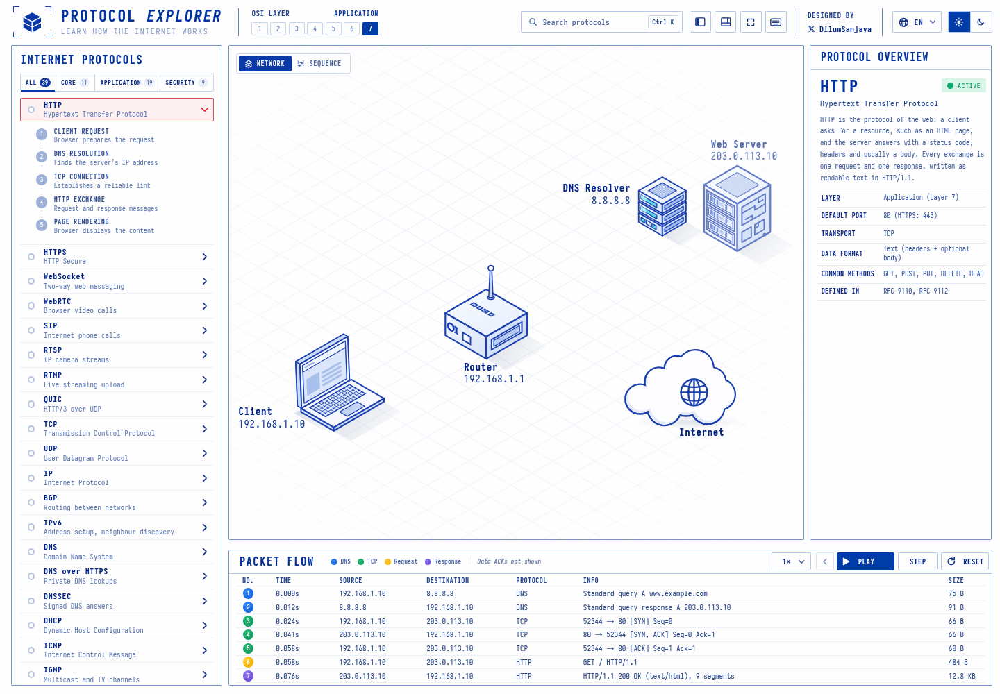
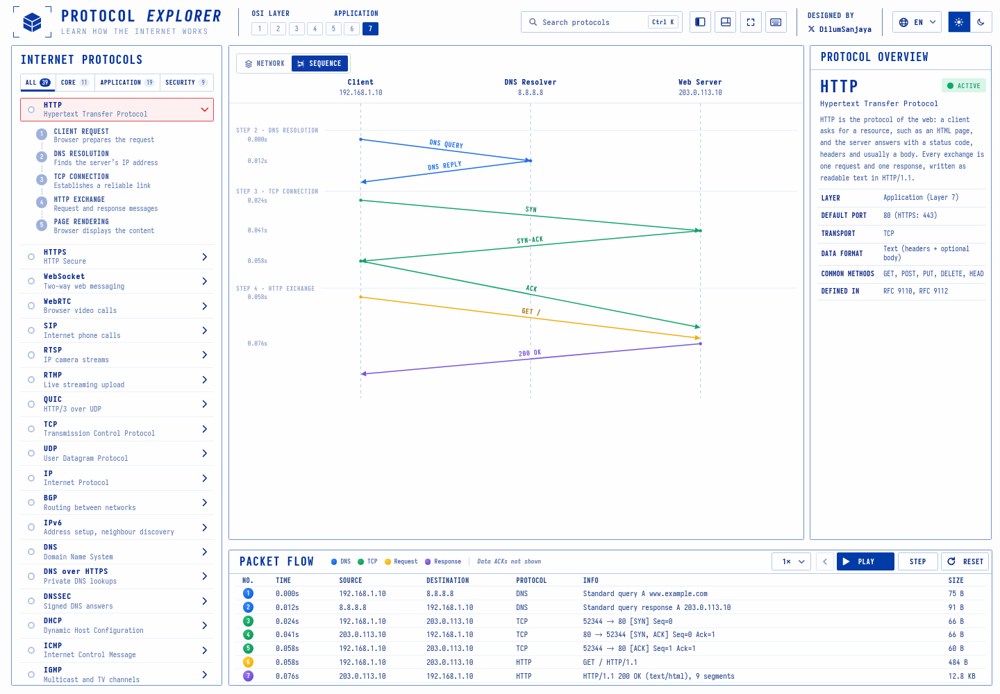
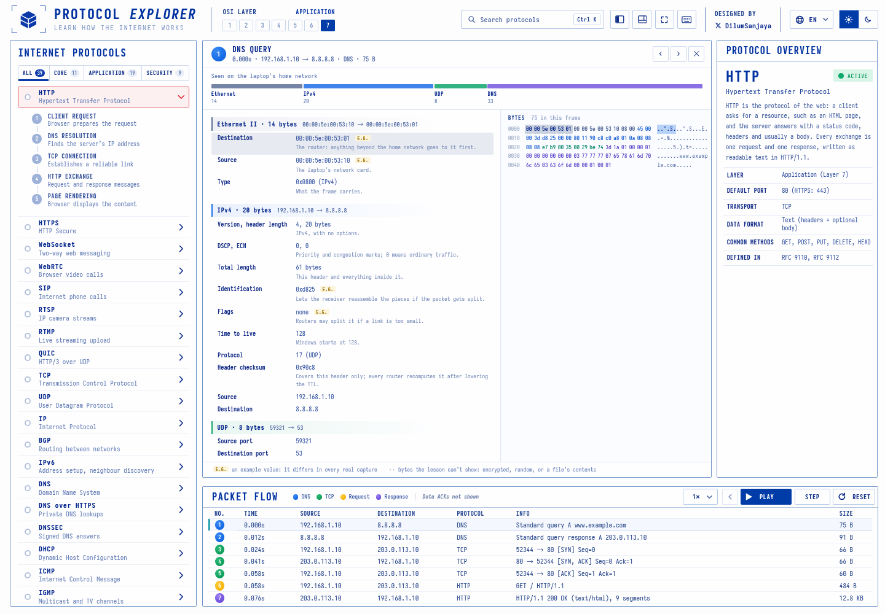
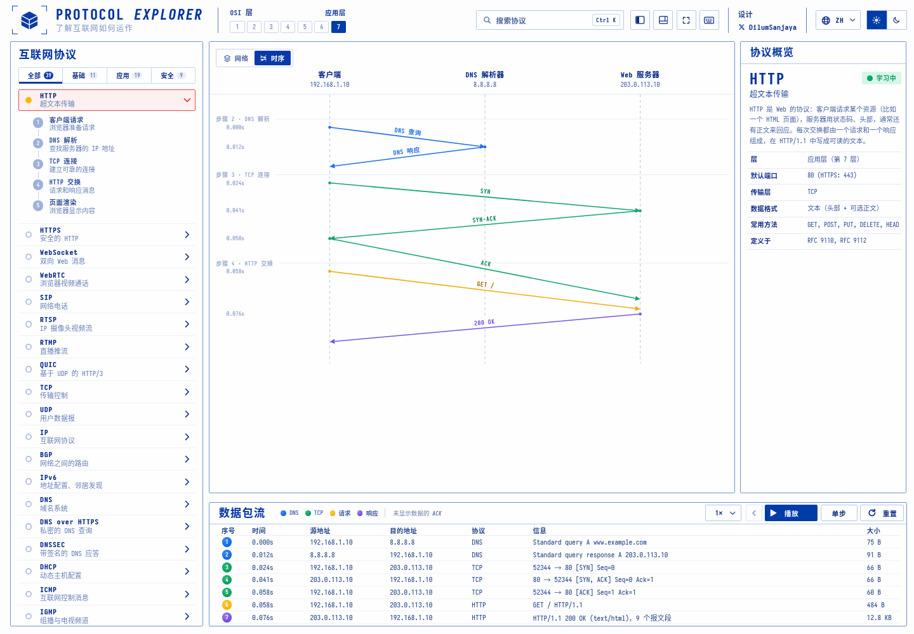
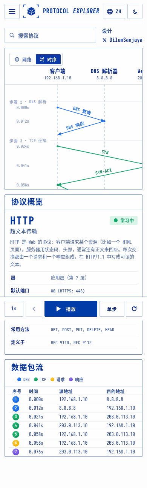

PUBLIC FRONTEND / ORIGINAL SITE / TECHNICAL NOTES
Protocol Explorer 公开前端实现分析
核心制作方法是：把协议教学过程写成声明式事件，再由同一播放器协调网络 SVG、时序 SVG、步骤解释和报文检查器。
以 原版网站 的公开生产资源和实际交互为依据。核验时间：2026-11-13 09:29 UTC+8。本文不是作者源码仓库或原始 TypeScript 的恢复。
已核实的整体结构
入口使用 Vite 模块预加载辅助代码；主包以原生 DOM 模板、事件委托和 SVG DOM 操作构建界面。在所检视主包中，没有发现 React、Mermaid 或 Canvas 绘图调用的证据。代码里的 canvas 属性是响应式基准宽度。
_s / Ts→步骤与事件VS / run / apply→网络 SVG · 时序 SVG解释栏 · 报文列表→报文选择
协议编码器 · 字节视图
证据：原生 DOM 入口 · L15685、课程注册表 · L9378、共享播放器 · L15566、统一状态分发 · L15796。

1. 先核实工具，再安装固定版本
Star 数来自 2026-11-13 的官方 GitHub API 快照；下列仓库核实时均未归档。逆向工具、格式化工具、AST 工具与浏览器验证工具分别承担不同工作，不能把高 Star 都当作“反混淆能力”。
| 官方仓库 | Star | 版本 | 本次用途与状态 | 核验源 |
|---|---|---|---|---|
| j4k0xb/webcrack | 3,052 | 2.16.0 | 已安装并运行；unminify 控制流；本次关闭动态去混淆与拆包 | GitHub API |
| beautifier/js-beautify | 9,010 | 2.0.3 | 已安装并运行；格式化 JS/CSS，保留压缩符号，作为行号基准 | GitHub API |
| babel/babel | 44,056 | 8.1.2 | 已安装 parser/traverse/generator；实际用 parser 定位声明与提取范围 | GitHub API |
| microsoft/playwright | 100,014 | 环境预装 | 已实际运行；浏览器交互、截图、网络记录 | GitHub API |
| pionxzh/wakaru | 1,087 | 1.16.0 | 已核实未安装；可选启发式拆分 Vite/Rollup，不能当原始模块证据 | GitHub API |
本次已实际执行 webcrack 与 js-beautify；Babel AST 用于声明定位和课程摘要提取。webcrack 的拆包支持不能保证恢复此 Vite 产物的作者模块边界；本次采用 --no-deobfuscate --no-unpack，只做可读化。输出中的符号名仍是生产压缩名。详情见 工具核验元数据、安装锁文件、安装与运行记录。
npm ci --cache /tmp/protocol-analysis-npm-cache npm run analyze:format npm run analyze:unminify npm run analyze:courses
2. 课程是主包中的数据对象
_s[id] 注册完整英文课程，Ts 决定导航顺序及分组：core 11、application 19、security 9。当前 39 课共同出现 id/name/title/layer/nodes/latency/legend/overview/outro/start/steps；部分课程另有 labels/links/lifelines/seenOn。这是观测到的数据结构，并非发现了正式 schema 校验器。
步骤事件有 8 种：type-url 5、show 60、packet 520、camera 8、render 3、note 57、stream 14、label 4。14 个 stream 含 37 个包，所以 520 + 37 = 557 条。671 不包含播放器另行注入的初始 focus；557 也不等于真实 TCP 分段或物理网络帧总数。
// 制作时可以采用的简化结构；名称和类型是本文归纳
Lesson = { id, nodes, latency, start, steps: [{ title, events }] }
PacketEvent = { type: "packet", from, to, color, label, payload,
quick?, lost?, locked?, row }
row = { time, src, dst, proto, info, len, wire }
// row 描述列表；wire 描述检查器要编码的协议结构。
HTTP 的 5 步依次讲请求准备、DNS、TCP、HTTP 交换和渲染，列表只有 7 条；响应条目可代表 9 个 TCP 分段。共有工厂辅助生成 packet、端口描述、TCP 包装和握手。学习进度通过 localStorage 保存。证据：报文工厂 l · L42、握手 he · L76、HTTP O0 · L245、注册 _s · L9378、导航 Ts · L9419、进度 Ym · L9657、报文展平 Vr · L12126。
已观察的 HTTP、HTTPS、TCP、DNSSEC、QUIC、IPv6、Wi-Fi 切换与中文加载流量没有课程 fetch/XHR API；结合主包内完整课程对象，可确认这些课程直接从前端数据读取。中文等语言以独立动态 import chunk 按需加载。
展开完整 39 课的结构统计
| ID | 名称 | 组别 | 步骤 | 事件 | 教学报文 | 源码定位 |
|---|---|---|---|---|---|---|
http | HTTP | application | 5 | 13 | 7 | O0 · L245 |
https | HTTPS | security | 6 | 18 | 11 | M0 · L511 |
websocket | WebSocket | application | 6 | 13 | 11 | Wf · L3182 |
webrtc | WebRTC | application | 8 | 19 | 20 | rm · L7225 |
sip | SIP | application | 6 | 23 | 21 | Am · L8221 |
rtsp | RTSP | application | 6 | 17 | 18 | Lm · L8409 |
rtmp | RTMP | application | 6 | 17 | 16 | Gm · L9075 |
quic | QUIC | core | 6 | 12 | 10 | P1 · L5126 |
tcp | TCP | core | 6 | 15 | 14 | q0 · L767 |
udp | UDP | core | 5 | 7 | 11 | H0 · L954 |
ip | IP | core | 5 | 11 | 6 | F0 · L1102 |
bgp | BGP | core | 8 | 19 | 13 | tm · L6921 |
ipv6 | IPv6 | core | 6 | 12 | 6 | A1 · L5299 |
dns | DNS | application | 5 | 15 | 8 | B0 · L1331 |
doh | DNS over HTTPS | security | 5 | 13 | 10 | N1 · L5706 |
dnssec | DNSSEC | security | 6 | 12 | 8 | B1 · L5958 |
dhcp | DHCP | application | 6 | 10 | 6 | _0 · L1622 |
icmp | ICMP | core | 6 | 13 | 10 | V0 · L1830 |
igmp | IGMP | core | 6 | 24 | 26 | qm · L8627 |
ntp | NTP | application | 5 | 6 | 2 | x1 · L5530 |
ethernet | Ethernet | core | 6 | 15 | 12 | hm · L7562 |
pppoe | PPPoE | core | 6 | 24 | 19 | mm · L7888 |
wifi | Wi-Fi | core | 5 | 14 | 12 | Zf · L3374 |
wpa3 | WPA3 | security | 5 | 13 | 11 | s1 · L3589 |
radius | RADIUS | security | 8 | 23 | 21 | Y1 · L6233 |
portal | Captive Portal | application | 6 | 25 | 19 | o1 · L3846 |
smtp | SMTP | application | 6 | 40 | 36 | df · L2054 |
pop3 | POP3 | application | 5 | 23 | 21 | pf · L2254 |
imap | IMAP | application | 5 | 21 | 18 | Tf · L2411 |
ftp | FTP | application | 6 | 24 | 24 | kf · L2588 |
smb | SMB | application | 8 | 19 | 17 | Q1 · L6472 |
ssh | SSH | security | 6 | 32 | 29 | Hf · L2817 |
tls | TLS/SSL | security | 6 | 16 | 14 | _f · L2991 |
proxy | HTTP Proxy | application | 7 | 22 | 17 | i1 · L4073 |
socks | SOCKS5 | application | 4 | 16 | 14 | l1 · L4283 |
reverse | Reverse Proxy | application | 6 | 18 | 13 | c1 · L4433 |
wireguard | WireGuard | security | 6 | 11 | 7 | d1 · L4639 |
ipsec | IPsec | security | 6 | 12 | 8 | h1 · L4851 |
modbus | Modbus | application | 6 | 14 | 11 | J1 · L6714 |
课程摘要 JSON 没有导出整套教学正文。提取脚本 使用 Babel AST 选取已检查的声明前缀，在限定执行时间的 VM 中重放初始化与两条分段循环。脚本绑定原始包和格式化包的 SHA-256；它只适用于这份已审核快照。node:vm 不是处理任意不可信新代码的安全边界。
3. 播放器把多种视图维持在同一状态
VS() 先添加初始 focus，再平铺 steps[].events 并保留 step 编号。它维护当前和下一个事件索引、playing、取消令牌；向界面派生 started/done/activeStep/steps/packets/labels/notes。报文状态是 current、past、future。queueMicrotask 合并同步阶段的多次通知。
网络模式执行 run(event) 动画；时序模式应用 apply(event) 的持久结果再按教学节奏等待。跳步先取消旧动画，重放前序事件的 apply 恢复状态，再继续播放。课程切换会 dispose 旧播放器，避免过期异步回调写入新课。
计时采用共享的暂停与倍率状态、统一计时辅助和取消令牌：每个 nt() 调用独立累计 elapsed += delta × speed，WAAPI Animation 各自计时，并受登记集合控制暂停和 playbackRate。不能称为只有一个时钟对象。常规网络事件间隔 450ms、步骤间隔 1100ms；时序模式为 260ms、650ms，另有 quick 节奏。证据：yn 动画控制 · L11731、nt 计时辅助 · L11761、GS 教学间隔 · L15549、VS 播放器 · L15566、ic 课程切换 · L15802。
4. SVG 设备、路线和粒子可以分别制作
设备用 30° 等轴投影把盒体面、矩形、圆和连线组合成路由器、交换机、笔记本、服务器与云；无需三维引擎。平面投影为 X = originX + (x−y) cos(π/6)、Y = originY + (x+y)/2 − z。场景分为网格、lanes、pulse、nodes、packet、note 等层。
路线表存各有向边的端点坐标；端点对再映射为多段路径，例如 client→web 经过 router 和 internet。粒子沿每段做线性插值 P(p) = A + p(B−A)；尾迹按 10、20、30 SVG 单位偏移。普通速度为 0.21 SVG 单位/ms，quick 为其 2.4 倍，普通逐跳再停 140ms。
粒子由 halo、主圆、拖尾、标签、payload 和可选锁图标组成。并发 stream 按间隔启动，链路高亮通过引用计数维持；丢包在经过 internet 的段落中途消失并显示叉号。摄像机对节点包围盒计算 viewBox，再做缓动插值。
网络动画的持续时间来自图上路程与教学参数，不能当成真实 RTT 或课程时间戳的按比例播放。证据：Tn 等轴投影 · L10905、pt 盒体 · L10930、oa 边表 · L11214、tw 路由表 · L11242、bw SVG 分层 · L11557、E0 粒子 · L15306、pc 沿路线移动 · L15383。
5. 时序图是自定义 SVG 布局器
Rw() 从同一批 packet/stream 数据建立发送与到达事件。发送时间取 row.time，到达时间为发送时间加课程端点对 latency；它们都是预设的模拟数据。lifeline 来自实际端点和可选课程顺序。
纵轴是混合时间轴：相邻模拟时间差超过 0.25 秒时插入 58px 的断轴波纹；较小时间差按 max(9, 3000 × Δt) 增加高度，再叠加发送间距、步骤标题和注释留白。因此既不是等距列表，也不是严格线性的时间比例图。
箭头从发送点连到到达点，以斜率展示延迟；标签沿箭头旋转并保持正向可读。Kw() 实测文字宽度，尝试多个箭头位置，用分离轴定理（SAT）避开注释、叉号和其他标签；没有完全无碰撞位置时选择重叠最少的候选。
绘线动画通过 stroke-dasharray/dashoffset 完成，常规 620ms、quick 320ms；stream 箭头相隔 160ms。表头独立保持水平滚动对齐，ResizeObserver 触发布局更新，最新报文自动滚入视口。箭头与报文列表共享同一个 packet index，点击打开同一检查器。证据：Rw 时间布局 · L11625、qw 箭头 · L11797、Kw 标签避让 · L11866、Mu SVG · L11937、Ii 绘线动画 · L11977、Ql 显隐与滚动 · L12054。

6. 报文检查器是带字段偏移的教学编码器
调用链是 PS/ES 表格 → a0 暂停播放 → iS.open → Gu 缓存 → Xg.frame → Wu/Vu → 字段树 + hex + ASCII。时序图的点击也进入 a0。Gu 按课程缓存生成结果，数据来自 row.wire，没有从浏览器读取真实网络报文。
最值得复用的是 R.field()：在写入字节的同时，记录字段名称、值、说明和半开偏移区间 [from,to)。Rr() 合并协议层时统一换算全局偏移，因此字段树和字节数组天然对应。
// 可复用的概念配方；不是作者原始类的恢复
begin = writer.length
encodeField(writer, value)
fields.push({ name, value, from: begin, to: writer.length })
// 合并一层时，对该层字段 from/to 加上 layerBase。
// hover 字段 → 高亮整个区间；hover 字节 → 找最小覆盖字段。
hex 每行 16 字节，旁边是 ASCII。字段悬停会同时点亮两列；字节悬停查找覆盖它的最小字段。未知随机数、密文、文件内容保留为 null，显示 ··；示例值另外标识。分层宽度条设置最小视觉宽度，不能据其宽度直接读字节比例。
编码器不只输出静态文字：它维护教学连接的 TCP SEQ/ACK、SYN/FIN 序号、乱序区间、SACK 与部分选项；对可知数据计算 IPv4、TCP、UDP、ICMP 等校验和，遇未知字节时保留未知。这里的校验对象是生成字节，未进行外部全协议抓包验证。
实现边界：TCP 载荷上限固定为 1460，带时间戳时为 1448，不应推断为完整的协商 MSS 网络栈；一条多段消息只展示首个 TCP 段，界面会说明总消息与分段数。以太帧补到 60 字节，但字节数组没有生成网卡附加的 4 字节 FCS。在已检视代码与界面中未发现 PCAP 导入、复制或导出实现。
证据：R 字段写入器 · L8828、pn 校验和 · L8852、TCP 首段 · L13980、Xg.frame · L14054、Gu 缓存 · L14288、nS hex · L14408、fr 联动高亮 · L14459、iS 检查器 · L14483、ES 点击委托 · L14887、a0 统一入口 · L15783。

7. 可复用的制作顺序
下面是根据原版机制整理的实现建议，不表示恢复了作者目录或原始模块名。
- 先做一课完整的数据。 从 HTTP 的 DNS、TCP、请求、响应入手；同时写步骤解释、列表行、模拟时间和 wire 描述，避免四处维护相互矛盾的副本。
- 把 event 设计成小指令。 区分持久结果 apply 与播放过程 run；每条事件保留 step，每个 packet 分配稳定序号，让列表、图形与检查器共享选择。
- 先实现取消、暂停、重放。 管理共享倍率和暂停状态；所有异步任务检查取消令牌。跳步用 apply 重建前序状态，新课 dispose 旧播放器。
- SVG 先做静态拓扑，再做运动。 把设备积木、节点坐标、边、路线、粒子、相机分别实现；先验证路径端点，再添加拖尾、脉冲、掉包与并发流。
- 时序图从相同 packet 派生。 先画 lifeline 与发送/到达箭头，再加步骤标题、长等待断轴、标签测量避让、同步滚动；明确区分模拟时间和教学播放时长。
- 检查器先解决字节偏移。 写字段时记范围，合并层时加偏移；保留未知字节。先实现 Ethernet/IPv4/UDP/DNS，再加入 TCP 和其他编码器。
- 最后接入解释、检索、翻译和偏好。 课程本体与界面词条分离，翻译包按需加载；进度、主题、速度保存于本地，避免影响协议数据。
- 用原版行为逐项核验。 至少检查 reset 后全览、逐事件播放、跳步重建、视图切换、点击暂停、双向字节高亮、中文与手机布局。
// 建议的新项目模块划分 lessons/ 课程脚本、端点、时间与报文定义 engine/ 事件队列、apply/run、取消令牌、倍率状态 network/ 等轴设备、坐标、路径、SVG 粒子与相机 sequence/ 时间布局、标签避让、SVG 绘线与滚动 wire/ 字节写入器、协议编码器、校验和、字段偏移 ui/ 导航、解释、报文表、检查器、语言与偏好
响应式原版采用 1440/1100/900/640 等断点及设计宽度缩放，手机为堆叠布局和侧栏抽屉。原版 reduced-motion 覆盖了部分 UI 和时序动画，但网络粒子的 rAF 没有统一关闭分支。新实现若要求全面减少动态效果，需要额外补齐这项策略。证据：YS 布局配置 · L15701、动画详细证据与限制。
8. 验证范围、证据和复跑方式
浏览器对原站做了 24 项断言，全部通过，未观察到 JavaScript 错误。除 HTTP 联动，还抽查 HTTPS、TCP、DNSSEC、QUIC、IPv6、Wi-Fi 的最后一条报文可生成检查器字节。手机检查使用 390 × 844，中文切换实测加载独立语言资源。
查看全部浏览器断言
- 通过 HTTP overview exposes seven packet rows
- 通过 Packet inspector contains Ethernet IPv4 UDP DNS
- 通过 Hover field highlights matching hex and ASCII byte range
- 通过 Inspector next packet updates shared selection
- 通过 Sequence overview has one arrow per HTTP packet row
- 通过 Sequence arrow opens same packet inspector
- 通过 Step enters lesson playback
- 通过 Reset restores all HTTP packet rows
- 通过 https course renders packet rows
- 通过 https last packet serializes into inspector bytes
- 通过 tcp course renders packet rows
- 通过 tcp last packet serializes into inspector bytes
- 通过 dnssec course renders packet rows
- 通过 dnssec last packet serializes into inspector bytes
- 通过 quic course renders packet rows
- 通过 quic last packet serializes into inspector bytes
- 通过 ipv6 course renders packet rows
- 通过 ipv6 last packet serializes into inspector bytes
- 通过 wifi course renders packet rows
- 通过 wifi last packet serializes into inspector bytes
- 通过 Simplified Chinese loads on demand
- 通过 Mobile uses phone layout
- 通过 Observed traffic contains no fetch/XHR course API
- 通过 No browser JavaScript errors
环境中的 Chromium 首次直连遇到代理证书信任错误；验证脚本使用 Playwright APIRequestContext，通过环境代理与受信任 CA 获取原站 HTTPS 响应，再将响应原样交给浏览器。没有关闭 TLS 校验，没有改写网页脚本、样式或业务数据。网络证据 记录资源状态、大小、SHA-256、样本与断言。
主包 506,093 字节，SHA-256 为 19e285d11f5fa0b1411ec94aaea6cd04531872e8322bb8a46c80e4f92e262834。主包未带 sourceMappingURL；对对应 .js.map 的公开请求返回 403，本次未取得 source map。所有源码行号指向 js-beautify 2.0.3 生成的分析副本，不能据此声称恢复原始文件、变量名或目录结构。
npm run analyze:format npm run analyze:unminify npm run analyze:courses npm run verify:browser # 需 Playwright、/usr/bin/chromium 和可访问原站的网络 npm run report python -m http.server 8000 --directory . # 打开 http://localhost:8000/report.html
Playwright 是当前环境预装能力，没有被加入项目锁文件；新环境需自行准备 Playwright 与 Chromium。浏览器脚本访问在线原站，若原站部署更新，动态资源或断言可能变化；当前源码提取脚本会在快照哈希变化时停止。
中文与手机截图

